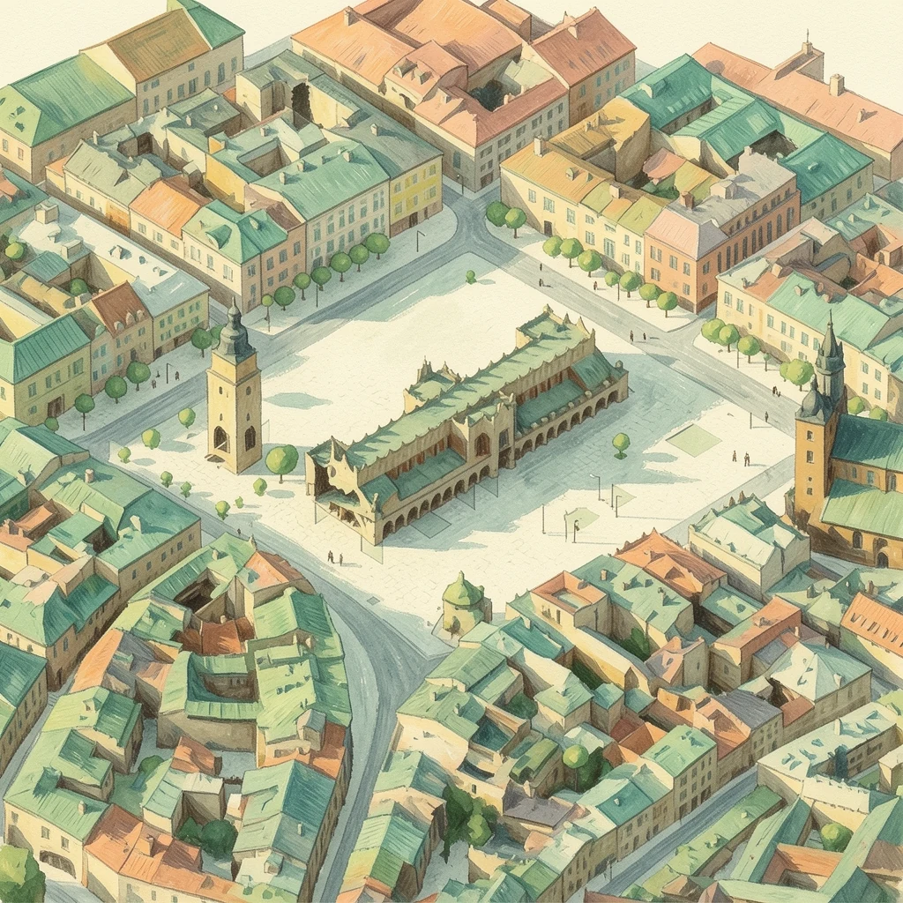
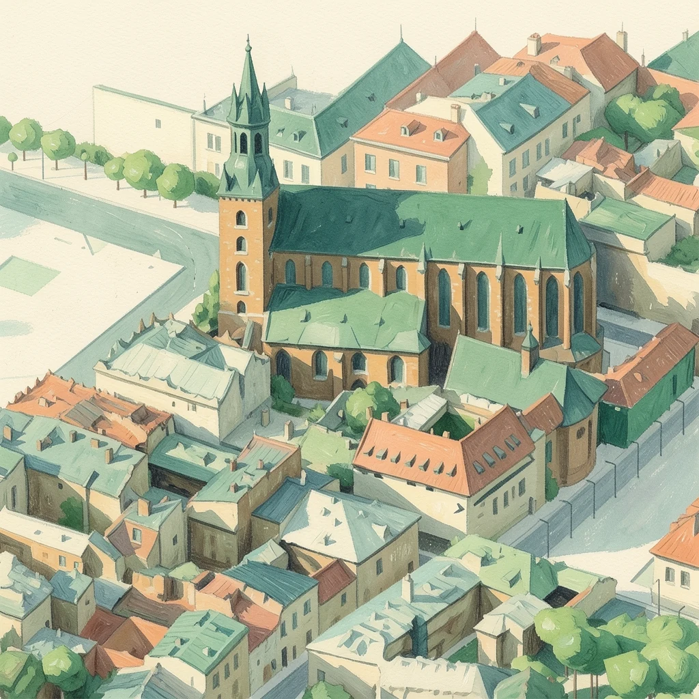
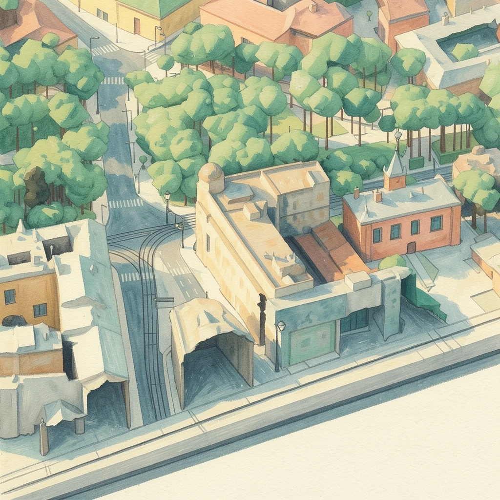
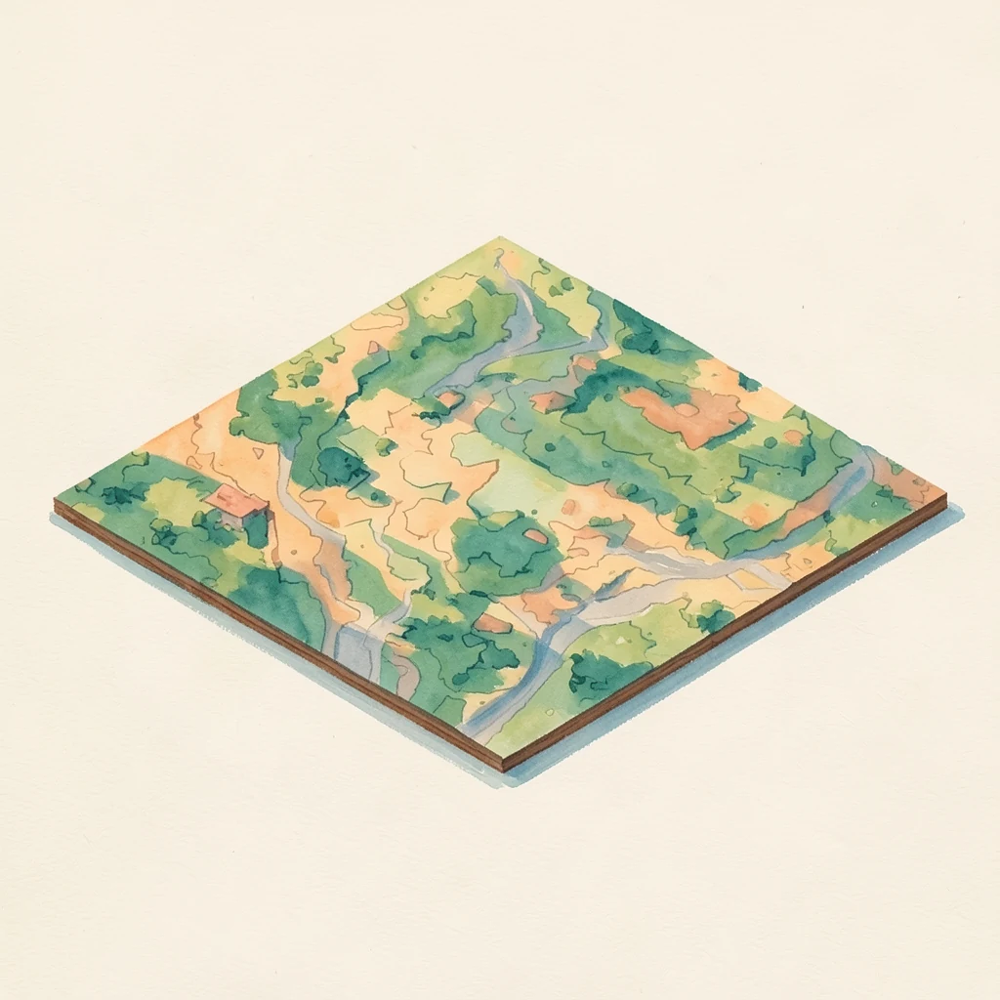
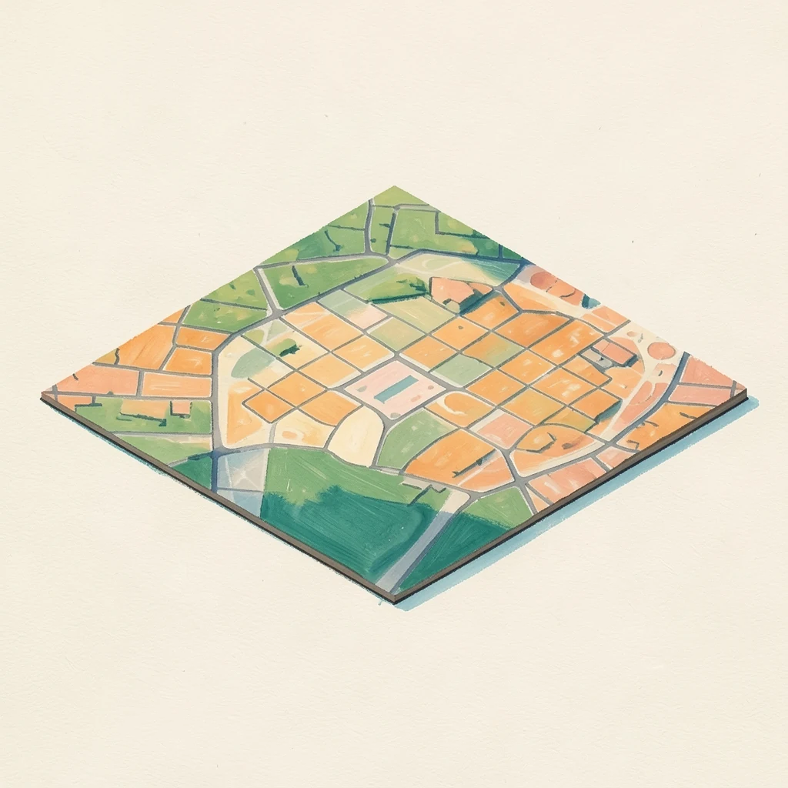
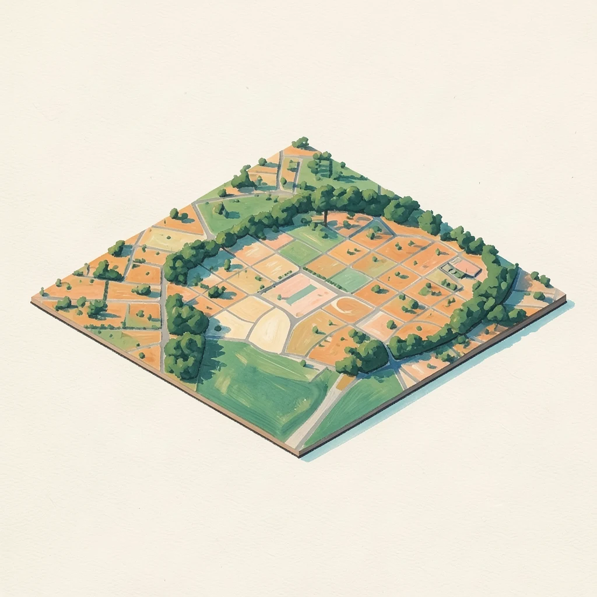
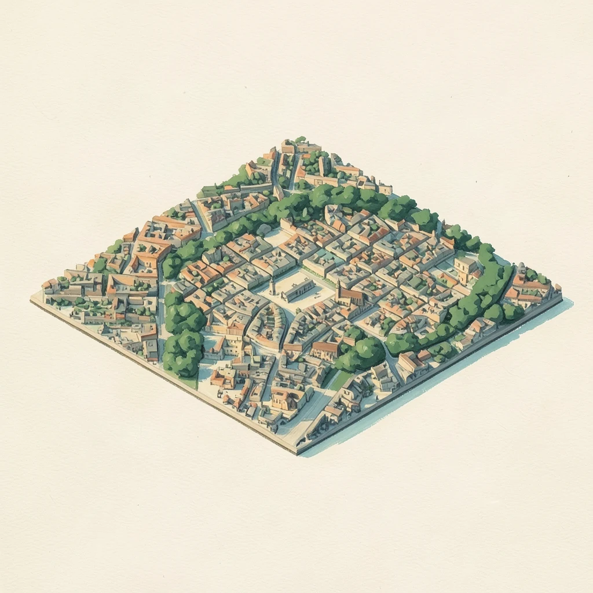

Kraków zbudowany z map i pomiarów.
Astymorph buduje świat do symulatorów jazdy z map ulic i pomiarów wysokości: teren, ulice, drzewa, budynki, torowiska i przystanki. Każdy element można potem edytować i wyeksportować do Unity, UE5 albo Godota.
Budynki na tej panoramie pochodzą z siatki fotogrametrycznej. Każdy z pięciu planów przemalował model obrazu uruchomiony lokalnie.
Zobacz, jak powstaje makietaWycinek ma 1040 metrów boku i obejmuje Rynek, Planty i Pocztę Główną. Teren, ulice, drzewa i budynki powstały z map i pomiarów wysokości, bez ręcznego modelowania.
-
01 / 05TEREN
Rzeźba terenu
Teren pochodzi z modelu wysokości o oczku 1 m. Na początku wysokości są przesadzone, żeby było widać spadek ku Wiśle.
- siatka
- 1 m
- różnica wysokości
- –
- bok
- –
-
02 / 05ULICE
Ulice, chodniki, place
Każda nawierzchnia jest osobnym obiektem: jezdnia, chodnik, plac, ścieżka. Uliczki bez asfaltu dostają bruk.
- powierzchni
- –
- ulic
- –
- przejść
- –
-
03 / 05ZIELEŃ
Drzewa z pomiaru
Każde drzewo ma zmierzoną wysokość i średnicę korony. Iglaste i liściaste dostają inne modele.
- drzew
- –
- typów drzew
- 9
-
04 / 05BUDYNKI
Wysokość z pomiaru
Obrys budynku pochodzi z mapy, a wysokość gzymsu, dachu i wież z modelu pokrycia terenu. Kościoły dostają cegłę i wysokie okna.
- budynków
- –
- najwyższa wieża
- –
- kondygnacja
- 3,2 m
-
05 / 05DETALE
Przejścia, tory, przystanki
Na koniec dochodzą przejścia dla pieszych, torowiska ze słupami trakcji, wiaty przystanków i latarnie.
- przystanków
- –
- latarni
- –
- torów
- –
Ta sama makieta, namalowana
Każdy obraz zaczyna się od renderu makiety z budynkami z fotogrametrii. Potem model obrazu uruchomiony lokalnie przemalowuje go w stylu gwaszu. Ulice, dachy i wieże zostają na swoich miejscach.



Od terenu do miasta




Te same dane w edytorze
- 01Trzy poziomy
- Teren, wiadukty i mosty (+1), tunele i przejścia (−1). Fizyka pojazdu liczy jazdę na właściwym poziomie.
- 02Jezdnie z pasami
- Przekroje pasów, linie, strzałki i przejścia. Pas autobusowy i rowerowy to osobne typy pasa.
- 03Torowiska
- Tory w jezdni i na podsypce, słupy trakcji, rozjazdy i łuki z krzywymi przejściowymi.
- 04Zieleń z pomiaru
- Drzewa z wysokością i koroną w dziewięciu typach, trawniki i żywopłoty.
- 05Budynki
- Bryły z obrysu i pomiaru wysokości, elewacje proceduralne z oknami, gzymsami i witrynami.
- 06Eksport
- Unity, UE5 i Godot. Kafle w układzie współrzędnych projektu, materiały rozdzielone na klasy.
Kraków to pierwszy wycinek.
Ten sam proces działa poza Krakowem. W programie zaznaczasz obszar na mapie, a Astymorph pobiera dane i buduje teren, ulice, zieleń i budynki.
Wróć na górę